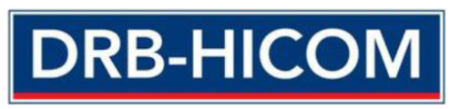
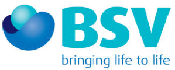
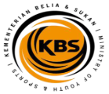

AI-Powered Sales Analytics, Action Planning & Performance TransformationAI for Sales ExecutivesPersonal Sales Tracking, Productivity & Action
Turn every Monday and Thursday report into dealers to visit, issues to fix and deals to close.
Frontline and junior sales executives learn to use Generative AI on the sales reports they already receive. They track their own KPIs and dealer performance, cut admin time and build a simple weekly AI routine they keep using long after the course — on a phone or laptop, with no coding and no data skills.


Trusted by teams at










Less time on reports. More time with dealers.
This is not generic AI training. Every module works on the Monday and Thursday sales reports — using safe synthetic data built from the same report structure — and ends with an output participants can use on their very next report.
AI does the admin and the number-crunching. The salesperson keeps the relationship and the close. Day 1 builds AI confidence, prompting and sales productivity; Day 2 moves into dealer analysis, a personal tracker and a weekly AI routine.
Upload the weekly report. Get four answers.
After the programme, every sales executive can upload a weekly sales report and use AI to answer:
Which dealer should I visit next?
A ranked visit list with the reason each dealer matters.
What has changed since last week?
Movements against KPIs and last week's action plan.
What opportunity or issue needs attention?
Stock, reload, activations or declining sales.
What specific action should I take?
What to discuss, fix or close at each dealer.
Learning objectives
- Understand what Generative AI can and cannot do for a salesperson — a tool that gives back selling time.
- Write effective sales prompts with a simple 4-part prompt formula.
- Choose the right AI tool for analysis, writing and research.
- Cut sales admin: visit notes, follow-ups, dealer messages and weekly summaries.
- Quickly make sense of product, promotion and dealer information.
- Analyse personal and dealer sales data against KPIs and last week's action plan.
- Build a simple personal sales tracker or dashboard from a weekly report.
- Commit to a weekly AI routine that fits the existing report cycle.
"Check my sales" vs a prompt that gets answers
COSTAR made easy: who you are, what you need, what data you are giving, and how you want the answer. Participants get a copy-paste prompt card for every use case — they only change the dealer name, week or target. Pick a task:
Choose a sales task
Illustrative examples with synthetic data. In class, every exercise uses realistic synthetic datasets built from the weekly report structure — no confidential records needed.
My weekly AI sales routine — built in Module 8
Designed around the existing report cycle, so AI use continues after the classroom.
Day 1 to work faster. Day 2 to sell smarter.
Open any module for the details. Creative AI activities run through both days to build confidence before the data work.
009:00 – 9:40Introduction, Icebreaker & Pre-Assessment
- Programme introduction and learning objectives
- "Where does my week go?" — map time spent on selling vs reports and admin
- Pre-training baseline: AI knowledge, confidence, prompt skills and current use of sales reports
Creative AI: My AI sales avatar — create a "sales superhero" image of yourself and use it to introduce yourself.
M19:40 – 10:45AI for the Sales Professional
- What Generative AI is, in plain language
- AI as a job enabler, not a replacement: AI does the admin and number-crunching; the salesperson keeps the relationship and the close
- Real examples of AI in field and channel sales
- Limits, hallucination and checking AI's numbers
- Responsible use: what customer and dealer data must never go into public AI tools
Exercise: "Time back for selling" — list five weekly tasks AI could shorten and estimate the hours saved.
M211:00 – 12:15Prompt Engineering for Sales
- What makes an effective prompt
- The 4-part prompt formula (COSTAR made easy), with copy-paste prompt cards
- Prompts for reading reports: "compare this week vs last week", "rank my dealers", "flag declines above 10%"
- Iterating and asking follow-up questions
- Save your five favourite prompts on your phone
Exercise: turn "check my sales" into a structured prompt that returns a ranked dealer list. Creative AI: prompt makeover — vague vs detailed image prompt.
M312:15 – 1:00Choosing the Right AI Tool
- ChatGPT, Claude, Google Gemini, Microsoft Copilot and DeepSeek compared on sales tasks
- Which tool for Excel analysis, writing messages and quick research
- Company-approved tools and data rules
Exercise: run one weekly report question through two tools and compare the accuracy.
♪2:00 – 2:20Creative AI: Team Sales Anthem
- Each team writes lyrics with AI and turns them into a song about hitting target (Suno)
M42:20 – 4:45AI for Personal Sales Productivity
- Turn visit notes into a structured visit report in two minutes
- Draft dealer follow-up messages, WhatsApp updates and reminders
- Prepare for a dealer visit: performance snapshot, talking points and what to close
- Write a weekly self-summary for your manager: results, gaps and next actions
- Plan the week: visit route priorities from a ranked dealer list
- Quick, simple visuals for dealer conversations
Exercise: from a sample dealer profile, produce a visit-prep sheet, a follow-up message and a weekly self-summary. Creative AI: a WhatsApp-ready dealer promo visual.
✓4:45 – 5:00Day 1 Reflection
- Key learning recap and Q&A
- Which task will you do with AI on Monday?
009:00 – 9:15Day 1 Recap & Anthem Playback
- Review of key learning and Day 2 objectives
- Anthem playback and vote — the winning team gets a prize
M59:15 – 10:30AI for Sales Knowledge
- Make sense of product updates, promotions, price lists and dealer scheme documents quickly
- Ask questions of documents: "What does this promo mean for my top 10 dealers?"
- Upload product and promo files to one AI notebook and ask in plain language
- Quick answers to common dealer questions and objections
Exercise: turn a new promotion circular into a dealer talking-points sheet.
M610:45 – 12:15 · Core moduleAI for Personal Sales & Dealer Analysis
- Reading the Monday and Thursday report with AI
- Check results against personal KPIs and last week's action plan
- Spot underperforming dealers, declining sales and growth opportunities
- Check dealer inventory, reload and replenishment needs, and activation status
- Rank dealers to visit and explain why each one matters
- Check AI's numbers: simple ways to verify the output
Capstone: upload a synthetic weekly report and answer the four questions — which dealer next, what changed, what needs attention, what action to take.
M712:15 – 1:00Personal Sales Tracker & Dashboard
- Turn the weekly report into a simple tracker: target vs actual, dealer ranking, stock alerts
- Ask AI to draw a one-page dashboard from the report with one prompt and no coding
- From dashboard to decision: every view ends with "so what do I do?"
Exercise: build a personal KPI and dealer tracker with three actions for next week. Creative AI: a 30-second results video or avatar message for your manager.
M82:00 – 4:40My AI Sales Routine & Adoption Plan
- A weekly AI routine around the report cycle: Monday priorities, Thursday check, Friday self-summary
- Pick 2–3 personal use cases, with time saved and sales impact expected
- Remove barriers: time, confidence and data rules
- Personal 30-day AI commitment, shared with your manager
Peer sharing: present your routine and first win.
✓4:40 – 5:15Post-Assessment & Closing
- Post-training assessment against the Day 1 baseline
- Recap, Q&A and feedback; introduction to the 30/60/90-day follow-up
- AI highlights reel: a short AI video and song made from the two days' outputs
Tools for next Monday's report
Every module ends with an output participants keep using.
- A personal sales trackerTarget vs actual, dealer ranking and stock alerts.
- Reusable prompt cardsCopy-paste prompts for every weekly sales task.
- A ranked dealer visit listWith the issue and action for each dealer.
- A visit-prep sheet & follow-up messageSnapshot, talking points and what to close.
- A dealer talking-points sheetFrom a new promotion circular, in minutes.
- A weekly self-summaryResults, gaps and next actions for your manager.
- A weekly AI routine and a written 30-day AI commitmentMonday priorities, Thursday check and Friday summary — shared with your manager so the habit sticks.